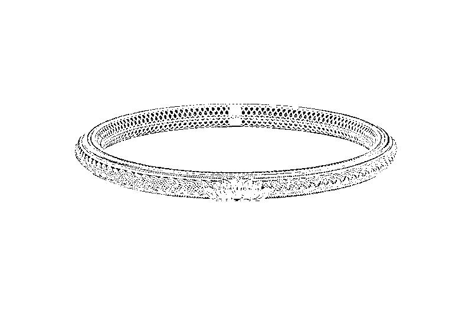
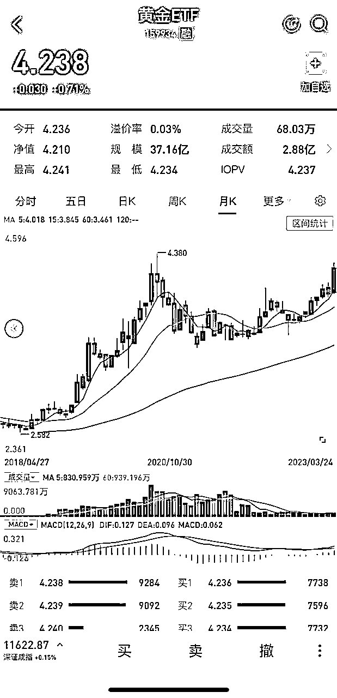

来源：https://orzymotr6n.feishu.cn/docx/PCa9dFWnconYupxUf7bcAxghnwc
首先呢，大家一定要明确自己买黄金的目的。你是怕黄金一再涨价，想去买一个黄金手链，黄金首饰，作为装饰品，送给自己或者是亲人伴侣。还是说，你目前看好黄金的价值，想买“黄金”作为投资产品。这完全是两个概念，大家一定要分清楚。

不要去某某生，某某福买了条黄金项链，黄金手镯就觉得自己在投资，那肯定不是这样子的。
当然你也可以既做黄金的投资，也买黄金的饰品，毕竟黄金的首饰相比其他珠宝保值效果还是非常好的，而且这几年，黄金的外观也越来越时尚。大家还是比较喜欢的。
好了，那么回归正题。我先说，黄金的首饰，大家要怎么买？
很多人一听到怎么买黄金首饰，第一反应肯定是想到去知名的旗舰店买。但是有时候我们会发现一个问题，就是同样的一个生肖产品，为什么有的店一口价是几千，有的店一口价要上万，究竟哪个店的产品更好，质量更有保障呢？
下面重点来了，我要跟大家说一个买黄金时，很多小白容易陷入的第一个坑。那就是只看价格，不看重量。
首先我要跟大家说一个可能比较颠覆很多人想法的一个理论，黄金的价值，其实跟品牌是完全没有关系的，不是说大品牌的黄金，就一定是好的，小品牌的黄金就不好。
黄金的质量高不高只跟它的纯度有关，为了便于市场交易，目前我国标准的黄金成色分为：AU9999、AU9995、AU999、AU995这几种。稍微解释一下，AU9999也被称为赤金，或者万足金，是几乎接近于纯金的，但是在市场上并不多见，为什么呢，因为这种足赤金纯度太高太软，完全不适合于加工，而AU999也就是我们经常说的千足金，含金量是在99.9%，是市面上最多见流通最广泛的黄金。
通常含金量在99.6%以上的黄金，也被称为24K金。那如果含金量低于99%，一般我们就不叫足金了。
所以，大家如果要选购黄金的首饰，一定要看它的黄金含量是多少！只要是正规店铺的黄金，都会有相应的标识。了解了这一点，我们才能意识到，自己买的黄金，究竟“值不值钱。”
接下来，我们就要看黄金的价格了。黄金的价格一般怎么算呢，其实这里主要是看黄金的重量。假设我们默认，现在市面上大部分黄金饰品是999足金，也就是规格为AU999的千足金。
这个时候，我们就要看它的质量是多少呢。拿我们刚刚讲到的例子，同样的一个生肖挂件都是AU999，一家店卖3000元，一家店卖5500元，卖5500元的店，是不是感觉贵了快一倍？
可是如果前者只有5g，后者却有10g呢。是不是明显后面一家店的黄金更划算？
因此在同等规格下，换算出1g黄金多少钱，才是具有对比价值的。
OK，总结一下，我们买黄金首饰时，需要注意的点就是黄金的价值一般是按照规格去划分的，所以跟品牌没有任何关系，并不是说大品牌的黄金质量就更好。而实际我们计算的克数，才是黄金真正的价格所在。
另外除开价格层面，黄金的溢价主要集中在工艺成本上，也就是我们常说的为设计买单。如果克数并不是很多的话，那么建议大家不要太在意几十块的差价，主要买款式上自己喜欢中意的。
当然如果是比较大件的产品，就建议可以多对比几家店铺，这个时候单克计算下来的价格就显得比较重要了。
那么接下来，我再给大家分享一下，关于普通人如何投资黄金的问题。
投资黄金这个问题，其实主要分为两块，一块是做实物黄金的投资，一块就是线上黄金（也叫纸黄金）的投资。
什么是实物黄金呢。很好理解，就是看得见摸得着的金条，金豆之类的实物。实物的金条在四大行，或者大的金店，一般都是有销售的，同样买的时候，注意看规格和克数。
如果你去金店、银行买金条，你可以放在家里，或者存在银行里，等需要的时候，可以把金条换成货币，也可以自己去提取。这就是实物黄金的投资。
这种投资，一般是一次性的投资。因为通常买了“金条”这种实物之后，你不会三五个月就去交易，通常来说，大家都会持有三五年或者更久的时间，等待黄金有一定幅度的升值，或者需要的时候，再做处理。
实物黄金投资的好处是，相比黄金首饰，金条的价格是更趋近于国际金价的，也就是说每克实物黄金的价格，肯定比黄金首饰更低，另外就是实物黄金一次性买了之后，几年时间都不用再去打理。
但缺点是，这种投资不够灵活，如果买在金价高点的话只能等着，而且不管你是在哪里买的黄金，要让银行帮你保管，一般一年都会有300左右的管理费。
再来看下什么是纸黄金投资呢。纸黄金投资，也可以理解为“非实物性黄金投资”。以前的话，是需要到银行去咨询贵金属业务的，但现在比较方便的是，可以直接在网上下载银行app操作，也可以开个人证券账户购买黄金衍生品。
这种投资，没有实物给你，但是你可以根据黄金变动的趋势进行实时的买卖，一切用手机操作即可。
一般来说纸黄金和实物黄金的价格上涨与下跌几乎是同步的，只是从交易上讲会更加灵活，手续费也会更低，以黄金etf，也可以叫黄金场内基金为例。

从2020年8月开始，黄金etf开始下跌，对应实物黄金，金条的价格也在下跌，之后一直处于震荡的状态。其中2021年3月的时候，是一个最低点，然后从去年年底黄金开始回升，并在最近一个月中，黄金的价格一直维持上涨，且突破了新高。
假如我们是在2020年7月到8月买了实物黄金，那么很抱歉，从图中可以看到正好是买在了最高点，差不多在今年2月到3月，实物黄金才刚回来，中间并没有任何增值。如果我们是买的纸黄金的话，在最低的位置，我们可以做1-2次加仓的操作，中途也可以根据上涨幅度做减仓，那么即便同样买在2020年的最高点，但是经过低点的加仓操作后，会拥有更多的盈利。
另外从手续费来讲，纸黄金并不存在保管费用，如果是从证券账户上购买，通常手续费为万分之1%，我这边券商合作渠道可拿到最低手续费仅万分之0.5%（每次最低交易手续费仅0.1元）
如果从大的投资角度来讲，相比一些基金股票，黄金的投资回报，可能并不算特别高，但是从普通人的投资习惯和风险层面上讲，黄金作为避险性投资，仍旧具有一定价值，同时从逐年数据上去看，黄金自2016年以来，到今年2023年，7年时间价格上几乎翻了一倍，比起普通的银行理财，还是非常有吸引力的。
彩蛋：
对了，送一个小彩蛋给大家，之前已经说过了，无论实体黄金，纸黄金，或者黄金首饰，实际本质上价格是趋同的，也就是国际金价的上涨和下跌会直接影响三者的价格涨幅，那么现在是不是买黄金的最佳时机呢，目前的黄金价格是高还是低。
我说一下个人的理解（此处为主观判断，不做理财建议）从短期三个月到一年来看的话，黄金的价格仍然有一定上涨空间，当然这个空间可能不会不大（如果没有外力事件作用的话），而一旦发生国际的一些纷争，或者美元贬值的话，那么大家懂的，这个时候，黄金的价格提升空间会扩大。
就目前而言的话黄金上涨的趋势是已经有了的。如果想买在低点的话，可以建议参考一下3月13日到3月17日这几天黄金的价格（相对合理）
这就是关于黄金购买（投资）的一个大致内容，大家有任何问题可留言，有文中若有疏漏处，可做补充指正。
感谢大家阅读！